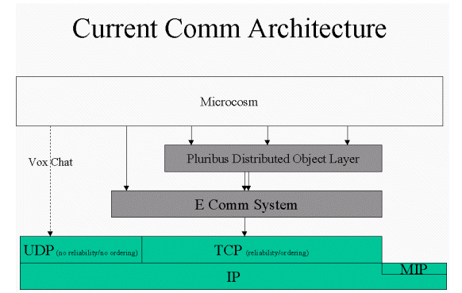
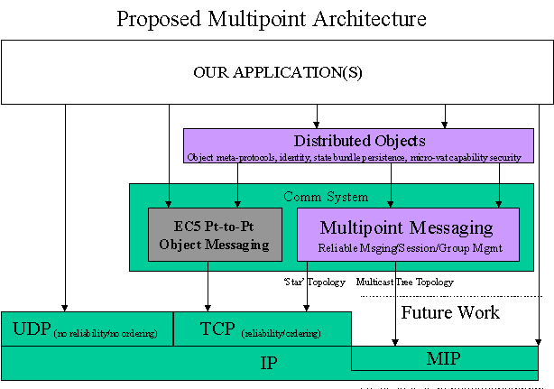
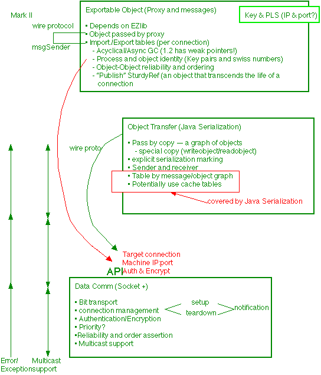
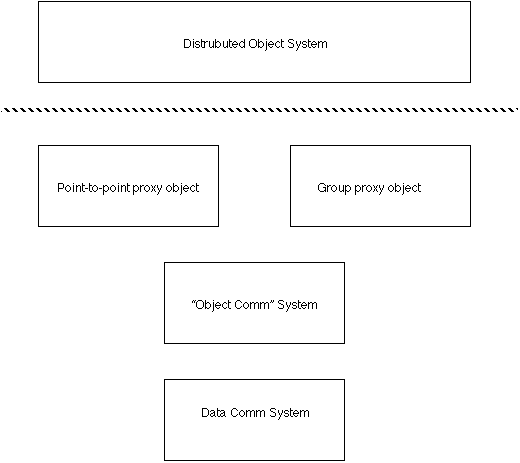

Author: slewis@communities.com

The main point of this figure is to show that for our current
comm system, we are heavily loading our communication needs on top of what
is basically a point-to-point communication abstraction...that is, TCP.
This works just fine for supporting all of our object-to-object communication
needs at the E-level, as it supplies reliability (provided by TCP's error
correction structure), and ordering guarantees (since point-to-point ordering
follows naturally from a reliable of a point-to-point connection).
But what our current comm system does not supply is multipoint messaging (1 sender and n receivers). In our current system, this multipoint messaging functionality is supplied by the Pluribus layer on top of the E comm system, and is modelled as a set of point-to-point relations between objects (e.g. between a host and all its clients). This structure can work OK, but has several undersireable properties:
1) The Pluribus layer and even some of the ingredient code (e.g. containership) is dependent upon the network topology (star, network, multicast, etc). Since the multipoint messaging functions are provided by the Pluribus layer and above, and they are modelled as a set of point-to-point links, this means that the Pluribus layer (and to some degree the containership code as well) is dependent upon the network topology for the multipoint messaging that we need. This means that if (e.g.) we wanted to go to another network topology for delivering the same set of services (e.g. multicast tree for efficiency reasons), then we would have to re-architect, re-design, and re-write large portions of our system, including the comm system itself, the Pluribus distributed object layer, and a good degree of our essential ingredient code (containership). This would not be good, and in my view it means that there is something wrong with our choice of messaging abstractions.
2) Layers outside the comm system are responsible for implementing a property that our multipoint messaging application requires: reliability1. We need the notion of reliability in multipoint messaging for some aspects of our application (i.e. we can't do without it). The reason for this is that some notion of multipoint reliability is needed to solve the distributed consensus problem, and the distributed consensus problem must be solved by our app to provide (e.g.) reliable containership. Note: without solving the distributed consensus problem, our infrastructure will not be robust at an infrastructure level. This is not a good property to build upon and is a property that may keep others from doing significant things with our code.
Note also that building a star topology on multiple reliable point-to-point links (i.e. with TCP as the transport for all the links), does not provide reliable multipoint messaging. To realize this, consider the following example: say we have three processes, A, B, and C. They are connected in a star topology like so:
A
/ \
B C
Now, if the link between A and C goes down, then A and C will know about it because of TCP's reliability guarantees, but unless something more is done, B will not know about this failure, and it will also not know about any failure in its messaging to C (or if a single message from B is intended for both A and C).
This is where the role for group membership comes in. Assuming some group membership algorithm, whose basic responsibility is to provide information about the group membership to all participants, then B can be informed of the membership change when the link between A and C goes down. For this trivial example, the obvious solution is to have A communicate the group membership change to B in the form of a membership change message. This is the sole function group membership, but it is a very important function. Actually, there is some interesting work showing that reliable multicast is a basic requirement for both the virtual synchrony and the transaction approaches to synchronizing distributed state. See here for a reference: http://lsewww.epfl.ch/~rachid/papers/dist.html (see the paper entitled The Transaction Model vs The Virtual Synchrony Model: Bridging the gap).

The point of this is to show that it would be possible to have a 'multipoint messaging' abstraction provided as part of the E comm system (call it Mult-E). This abstraction would make the layers above it (Pluribus layer and applications above it able to use a multipoint messaging abstraction with two nice properties: a) it would not have to know about the network topology...and therefore it would allow the network topology to change without the application level code having to change; and b) would provide a reliable multicast messaging abstraction, and make it unnecessary for the higher layers to worry about the needs of implementing a group membership algorithm, or assuring the desired multipoint ordering properties (whichever ones are determined necessary given our application requirements...assuming that at least sender-order [FIFO] will be required, but other ordering properties may be needed depending upon application requirements).
A second important aspect of our communications system is support for multipoint messaging. Multipoint messaging has a few characteristics that make it different from pt-to-pt messaging: 1) Reliability is not nearly as simple (and is fundamentally based upon reliable group membership); 2) There are many more varieties of message delivery ordering; 3) The notion of a return value or 'promise' is not typically useful (it would typically result in "ack implosion" to have a return value associated with a message going to [e.g.] 10,000 recipients). Therefore, I believe it makes sense to have our comm system specifically support multipoint messaging as well as pt-to-pt messaging, so that these layers of our comm system can provide appropriate abstractions for the upper layers of our system.
In the DObjects work, the local access to the 'group' or 'session that defines a multipoint session (group) is called the 'SessionMember'. This object is a 'local representative' of the session, and provides the messaging interfaces for sending multipoint messages between presences of a distributed object. All it does is provide these messaging interfaces (sendDataToPresences, and sendDataToPresenceAtSession). The SessionMember also provides access to some interfaces for getting 'meta' information about the group itself (i.e. the current group membership...e.g. getCurrentGroupMembers, isGroupManager, joinGroup, leaveGroup, and etc.).
Note that the difficulty of implementing an accurate failure detector depends primarily upon the network topology: it is trivial for a star topology (the one we are currently focussed on in the short term), quite difficult for a multicast tree topology. The value of having such a membership algorithm in the multipoint messaging abstraction is that the specific implementation is hidden in the same way that the network topology is hidden...clients only need to know that it is done 'accurately' (with fewer than n/2 - 1 errors). The whole point of this discussion, however, is to introduce an abstraction which allows client code to be 'topology independent'. Given that we are using a star topology for now, this only becomes valueable as an approach when we wish to use some other topology than a star and are able to do so easily rather than having to rearchitect our entire system.

Both of these two 'low' layers of the comm system (Data Comm and Object Transfer) are relevant to both the pt-to-pt messaging between objects, as well as the multipoint communication layers. That is, both the pt-to-pt object messaging structure (shown above as "Exportable Object", and in the diagram above as "EC5 Pt-to-Pt Messaging"), and to the multipoint messaging layer. This relationship between these modules is described by another one of Bob's figures:

With this architectural approach among these three subsystems, it allows a good deal of reuse of functionality and code...that is both the Data Comm and Object Comm layers of the comm system need only to be implemented/debugged once, and they can provide all of the functionality to support both the pt-2-pt ("Point-to-point Proxy Object") messaging and the multipoint ("Group proxy object") messaging structures.
Here is a diagram showing the SessionMember class API and how it relates to the primary facet interface class, the SessionDObjectFacet:
This API provides two major (related) services for clients: 1) It maintains accurate information about group membership. 'Group membership' is defined in terms of the other SessionMembers that currently make up this distributed group (SessionMembers have a many-to-one relationship with processes). This API supports the accurate local tracking of distributed group membership. The most important reason for providing this service is to be able to make strong guarantees to client code of the reliability of the two multipoint messaging interfaces (see 4 below). See above for a discussion of the importance of group membership to reliability, and the relevance of multipoint reliability to our application.
From the perspective of the DObject code that uses the service provided by the SessionMember, there are only two key messaging interfaces provided by this class: sendDataToPresences, sendDataToPresenceAtSession). These are the basic messaging interfaces provided to client code (note that the SessionDObjectFacet class hides the specification of the ID receiver, meaning that the DObject can only direct messages to its own presences). These provide a service critical to the Unum/Presence model: reliable multipoint delivery of arbitrary messages to remote presences of client objects. That is, they do not deliver multipoint messages to any client receivers...rather they only deliver messages between processes to remote presences of a given object.
The SessionMember also provides basic DObject construction/destruction services. For example, to create an arbitrary distributed object that is locally hosted, there is an interface: createDObject, that creates a distributed object that is hosted within this SessionMember. This is a completely generic creation interface, and supports the general meta-object function of creation. Conversely, there is an interface for generic destruction, destroyDObject, that is responsible for locally destroying a distributed object presence. Note for construction that the createDObject interface calls a constructor with a certain method signature...for example: the DObject constructor.
The DObject root class is intended to be the root class for all distributed objects. It has the same incarnation for both host and client presences of a given subclass. Essentially, the job of the DObject subclass creator is to define the app-specific behavior, and use the functionality provided by the root DObject class (and override that functionality if appropriate and available):
1) An identity (globally unique identifier) for each distributed
object. See the myID
field in the DObject
class.
2) A sessionmember id that represents the location of the 'home' sessionmember for this DObject.
See the myHomeSessionID
field in the DObject
class. This allows the local presence to determine whether it is a
client or host, and to be able to communicate directly with the host (if
a client).
3) Creation and distribution of client presences. See the
following DObject class methods: createClient,
createClientDone,
getStateForClient.
These methods are called from createClient, which is the entry point method
for client creation, called asynchronously in response to a message from
the SessionMember class, and
may be overridden by subclasses as appropriate.
4) State change notification. When the DObject presence
changes its state (either explicitly [hosts] or as a result of partition
[clients]), the SessionMember class sends it notification about its state change.
In response to these asynchronous notifications, the DObject root class
has some methods that are declared final that handle these messages
to do basic initialization and shutdown (i.e. shutdown that DObjects' access
to the run queue, etc.). These final methods are: create,
activate,
deactivate,
and destroy.
The activate and deactivate methods generate another asynchronous message,
activated
and deactivated,
respectively, that are subclass overrideable, allowing subclasses to define
specific behavior to happen on basic activation and deactivation as desired
by overriding activated
and deactivated.
5) Basic messaging support to remote presences. This is
the most important service provided by the DObject root class for subclasses.
The service is provided (ultimately) by the SessionDObjectFacet.sendDataToPresences,
and SessionDObjectFacet.sendDataToPresenceAtSession
methods. The DObject class exposes some utility methods to subclasses
to make it easy for them to deliver messages in the common messaging pattern
(i.e. from clients to their host presence, and from the host to all client
presences). These methods are: DObject.sendDataToRemote,
DObject.sendClosureToHost,
and DObject.sendClosureToRemotes.
The Closure class
is a class to represent an arbitrary Closure or code block (also can be
called an Envelope).
6) Some 'meta' interfaces that allow DObject subclasses to query
about themselves. For example: DObject.isClientPresence
allows subclass code to determine if it is a client or host presence.
There are other meta interfaces for getting the SessionDObjectFacet (getSessionMember),
getting the local view's ID (getSessionMemberID),
adding and removing oneself as a 'listener' for the arrival and departure
of other DObjects (addDObjectListener/removeDObjectListener)
and the actual notification methods for these notifications: otherActivated,
otherDeactivated.
7) Serveral interfaces to support the exchange of capabilities
between presences: sendRequestForCapability,
requestCapability,
receiveCapability.
8) An interface for requesting more capabilities from the local
SessionMember (e.g. access to UI/Other I/O, etc) called getSessionFacet.
9) There are a number of other utility methods that allow the
subclass DObject to customize its own message handling and other aspects
of its fundamental behavior (e.g. runClosure,
initialize,
setInitialState,
handleDataFromRemote,
handleMessageException,
receiveDataFromRemote,
receiveClosureFromRemote.
10) A couple of generic utility methods (e.g. debug
and dumpStack).
It's useful to break up a DObject's internal functionality into pieces called 'Components' (Ingredients). The CompositeDObject class provides the basic support for this. That is, all subclasses of CompositeDObject can inherit the basic behavior of being able to add/remove/use instances of some subclass of BaseComponent. The ComponentDObject class also handles the automatic message routing to these components, and allows the components to easily messaging with their remote counterparts via the support methods sendToHomeComponent, sendToRemoteComponents, and sendToRemoteComponent.
All of this code is written, and has been through a first round of initial testing. It works as specified now, but does need more complete testing. If you are interested in looking at the (fully commented) source see the links on the individual javadocs for each class (there is a link to the source for almost all classes) or download this zip, or check out the code in the ec/dom/tests or ec/dom/tests/lilbuddies subtrees. There are Cafe project files for these two subtree located in ec5/projects/ec/dom/tests and ec5/projects/ec/dom/tests/lilbuddies respectively.
Definition of reliability in multipoint messaging: A 'reliable' channel ensures that a message sent by pi to pj is eventually received by pj if pi and pj are correct (i.e. do not crash). This does not exclude link failures, if we require that any link failure is eventually repaired (physical 'link failure' is usually modelled by equating it with process crash from the point of view of the distributed system). A reliable channel can be implemented by retransmitting lost or corrupt messages.